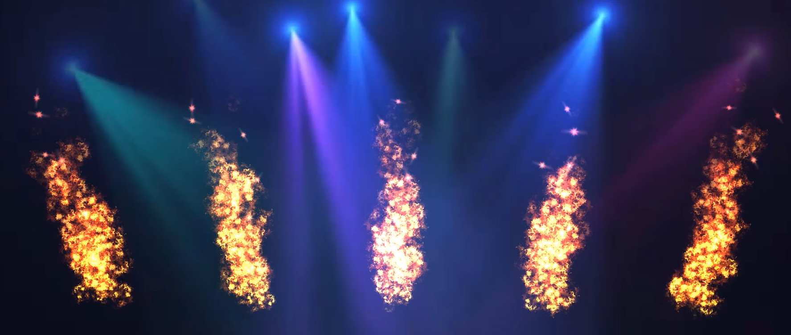

Project Description
In this project, we are creating an audio visualizer using fire simulations that react to changes in features in music like frequency, tempo, and key. We represent a set of frequency bands as a set of fires, and each fire changes in color, amplitude, or smokiness in real time according to the aforementioned music feature changes. Our final product will be a video that shows the fire simulations corresponding to a few different songs.
Accomplishments
Our work up to this point has focused on real time fire rendering. We have been using Three.js for real time rendering with WebGL. Initially, we were planning to go with a more realistic fire, but we have since learned the limitations of our WebGl API, and have decided to go for something more stylized. So far, we have created a real-time fire and spark rendering using particles and added perlin noise, and have implemented a smoke effect using a simple navier-stokes fluid simulation.
Preliminary Results
Smoke Simulation
In the video below, we can see smoke coming out of a source in the ground, rising into the air, and wrapping around a ball. Our smoke model uses the Navier-Stokes model for fluid simulation, and then we add in some temperature advection to account for how smoke rises with hot temperatures and sinks with cool temperatures.
|
|
|
Realistic Fire Rendering
As we began to render fire, we realized how important it was for it to be physically realistic. We've incorporated drag and gravity in order to model the physics of the simulation. In addition, we have now added low pressure points that particles gravitate toward. In the video below, the pressure points are exaggerated so their effect is clear to the viewer. We plan to finalize adjustment of our parameters (including particle size, particle life span, etc.) to ensure the most realistic fire rendering.
|
|
|
Fire Embers
To add some details to our fires, we created new fire embers. These embers are also particles, but they have different properties, including a different texture, velocity settings, drag, and more.
|
|

|
Audio Visualization
Finally, on a separate branch, we integrated the WebAudio API with our particle system in order to visualize the frequencies of a user-selected audio clip using a Fast Fourier Transform of size 256. The audio frequencies were visualized through the velocity/height of the fire particles as well as their color, interpolated over a spline based on the individual particle’s time alive and RGB endpoints set based on the current frequency.
|
Click the top right corner icon to open video in a new tab if preview does not load. |

|
Work Plan
Progress relative to work plan
We have been a bit ahead of schedule on getting our fire rendering and audio analysis implemented, as we had originally planned to be done with the fire rendering and audio implementation by Week 2 and working on incorporating the fire with the audio analysis by Week 3-- which we have already significantly begun working on. The WebGL rendering environment was a bit tricky to set up, but now that we have all of the individual parts working, it shouldn't take much longer to finish our fire implementation. We primarily have to integrate the smoke simulation into the particle fire. We also spent more time in week 1 deciding on how we would implement the model, and how it should look. Luckily, we built in a good amount of buffer room into our schedule, so that we can potentially finish some of our aspirational goals, like adding more effects to our fire (e.g. color schemes) and integrating the Spotify API.
Updated work plan
Week 3:
- Merge all four parts (smoke simulation, realistic particle fire simulation, fire embers, and audio visualization).
- Accentuate the differences in frequencies via amplitude and color based on mean and standard deviation/overall distribution of frequencies outputted by the FFT of the audio clip.
- Fix the awkward animation looping which causes the particle generation to abruptly end and restart-- make the rendering smoother.
- Integrate the Spotify API to include energy of the audio clip to adjust the color scheme accordingly and/or allow a user to select a song from Spotify.
- Create video demo and final presentation.
Update Video
|
|